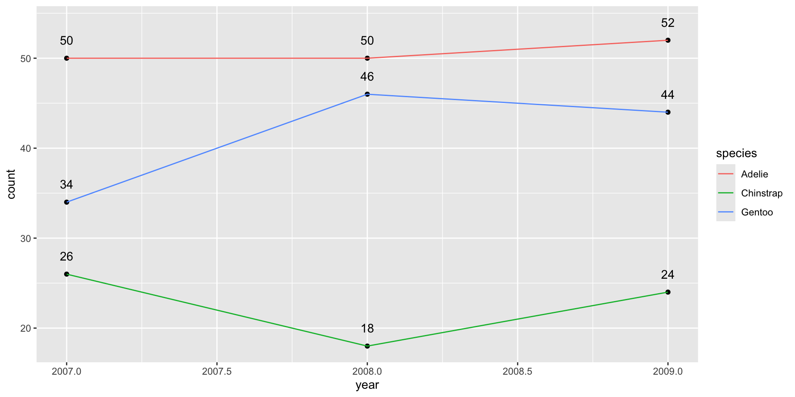

# Load libraries
library(ggplot2)
library(palmerpenguins)
# Call ggplot
ggplot(
data = penguins
)
ggplot2


ggplot2A grammar of graphics
Consistent syntax
Flexible
Customisable
ggplot() functionData (data =)
Coordinate system (x and y)
Aesthetics (aes())
Geometries (geom_*)
ggplot2 components: Data# Load libraries
library(ggplot2)
library(palmerpenguins)
# Call ggplot
ggplot(
data = penguins
)
ggplot2 components: Coordinates# Load libraries
library(ggplot2)
library(palmerpenguins)
# Call ggplot
ggplot(
data = penguins,
aes(x = body_mass_g)
)
ggplot2 components: Geom# Load libraries
library(ggplot2)
library(palmerpenguins)
# Call ggplot
ggplot(
data = penguins,
aes(x = body_mass_g)) +
geom_histogram()
ggplot2 components: Static Aesthetics# Load libraries
library(ggplot2)
library(palmerpenguins)
# Call ggplot
ggplot(
data = penguins,
aes(x = body_mass_g)) +
geom_histogram(
color = 'navy',
fill = 'lightblue'
)
ggplot2 components: Mapped Aestheticslibrary(palmerpenguins)
library(ggplot2)
library(RColorBrewer)
library(colorspace)
library(ggtext)
myCols <- brewer.pal(3, 'Set2')
ggplot(data=penguins,
aes(x = body_mass_g,
y = flipper_length_mm,
color = species,
fill = species)) +
geom_point(shape = 21, size = 3) +
geom_smooth(method="lm", size=3) +
scale_color_manual("", values = myCols) +
scale_fill_manual("", values = lighten(myCols, 0.5)) +
scale_x_continuous(labels = scales::comma) +
labs(y = "Flipper length (mm)",
x = "Body mass (g)",
title = "<span style='color: #8DA0CB'>**Gentoo**</span> penguins are larger and heavier than
<span style='color: #66C2A5'>**Adelie**</span> or
<span style='color: #FC8D62'>**Chinstrap**</span>",
subtitle = "**Penguin body mass (g) versus flipper length (mm) by species**",
caption = "**Data** from the Palmer Penguins dataset") +
theme_minimal() +
theme(
plot.title.position = "plot",
plot.title = element_markdown(color='grey10', size=24),
plot.subtitle = element_markdown(color='grey60', size=16,
margin = margin(5,0,10,0)),
plot.caption = element_markdown(color = "grey60",
size=10, hjust=0),
axis.title = element_text(color='grey10', size=16),
axis.text = element_text(color='grey10', size=14)
)
ggplot2 A note on style# Load libraries
library(ggplot2)
library(palmerpenguins)
# Call ggplot
ggplot(
data = penguins,
aes(x = body_mass_g)) +
geom_histogram(
color = 'navy',
fill = 'lightblue')library() calls on top# Commentsx = body_mass_gdata = and (aes()) on separate linescolor and fill on new lines. . .
ggplot(data=penguins,aes(x=body_mass_g))+geom_histogram(color='navy',fill='lightblue')Does the same but harder to read and debug!
5 minutes

# Load libraries
library(ggplot2)
library(palmerpenguins)
# Call ggplot
ggplot(
data = penguins,
aes(x = body_mass_g)) +
geom_histogram(
color = 'navy',
fill = 'lightblue'
)?geom_density() at the console to open the R Documentation. Scroll down to the section on Aesthetics to read about other modifiable aesthetics.Map variables to visual elements
5 minutes

# Plot
ggplot(
data = penguins,
aes(x = island,
y = body_mass_g)) +
geom_boxplot()ggplot(data=penguins,
aes(x = body_mass_g,
y = flipper_length_mm,
color = species,
fill = species)) +
geom_point()
myCols <- c("skyblue", "orange", "forestgreen")
ggplot(data=penguins,
aes(x = body_mass_g,
y = flipper_length_mm,
color = species,
fill = species)) +
geom_point(size = 2) +
geom_smooth(method = 'lm', size = 2) +
scale_color_manual(values = myCols) +
scale_fill_manual(values = myCols) +
scale_x_continuous("Body mass (g)") +
scale_y_continuous("Flipper length (mm)")
15 minutes
ggplot2 and the penguins data to produce the figure
x, y and fill aesthetics that will go in to aes().geom_jitter() and geom_boxplot()alpha = argument makes the boxplots transparentscale_fill_manual() to control the fill colors for the three different species# Fill in the blanks!
ggplot(
data = ,
aes(x = ,
y = ,
fill = )) +
geom_jitter(shape = ) +
geom_boxplot(
alpha = ) +
scale_y_continuous(
" ",
limits = c( , )) +
scale_x_discrete(NULL) +
scale_fill_manual(NULL,
values = c(' ',' ',' '))